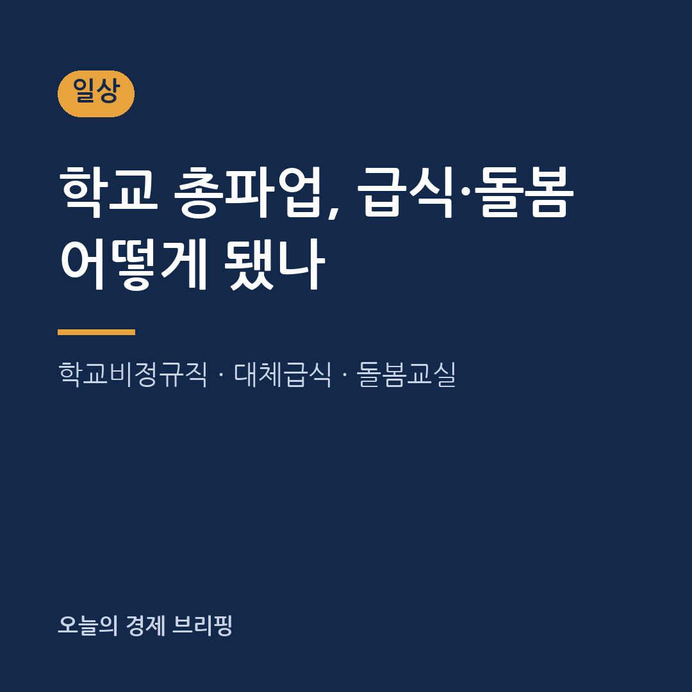
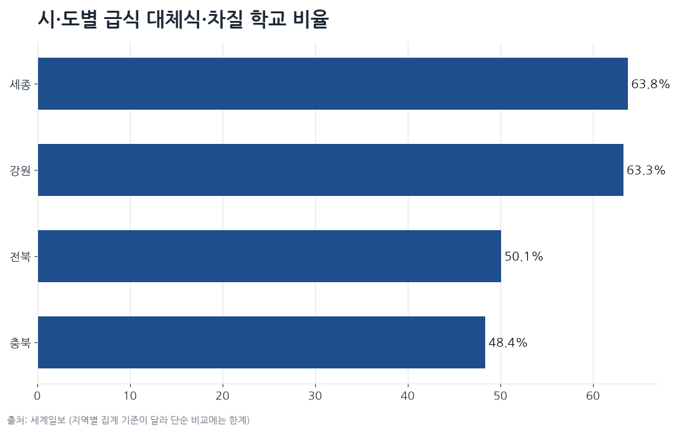

2026-11-27-1749-naver 발행 키트 · 이 페이지는 검색에 노출되지 않습니다.
제목
카테고리
일상태그
본문 (그림·표 포함)
휴대폰 블로그 앱에서는 그림이 같이 붙지 않을 수 있어요. 그때는 [글자만 복사] 후 아래 이미지를 저장해 [그래프1]·[표1] 자리에 첨부하세요.

오늘 아이 학교에서 점심을 뭘 먹었는지 물어보셨나요? 학교에서 일하는 비정규직 노동자들이 파업에 들어가면서, 아이 둔 집이라면 한 번쯤 신경 쓰이는 하루였을 거예요.
▶ 무슨 일이 있었던 거예요?
전국학교비정규직연대회의가 교육부, 전국 시·도교육청과 임금 교섭을 하다 합의에 이르지 못했어요. 그래서 27일 총파업에 나섰답니다.
노조 쪽은 기본급을 월 10만 5천 원 올리고, 정기 상여금도 연 100만 원 늘려 달라고 요구하고 있어요. 직무 보조비 같은 수당을 새로 만들자는 요구도 있고요.
학교 급식 조리, 돌봄교실 운영 같은 일을 맡은 분들이 많다 보니 파업이 생기면 급식과 돌봄에 바로 영향이 가거든요.
▶ 우리 동네 급식은 어땠을까요?
지역마다 달랐어요. 보도에 나온 숫자만 모아 보면 이래요.
세종은 152개 학교 가운데 97곳이 빵이나 주먹밥 같은 대체식으로 점심을 해결했고, 강원은 670곳 중 424곳이 그랬어요. 전북은 783곳 중 392곳이 급식에 차질이 있었고, 충북은 508곳 중 246곳이 대체식을 냈어요.

다만 지역마다 집계 기준이 조금씩 달라서, 이 숫자를 그대로 줄 세워 비교하긴 어려워요. 우리 지역이 대략 어느 정도였는지 감을 잡는 정도로 봐 주세요.
▶ 돌봄교실은요?
돌봄은 급식보다 영향이 작았다고 해요. 경기는 1,336개 학교 중 33곳이 문을 닫았고, 세종은 55개 학교 중 10곳이 운영을 멈췄어요.
그래도 우리 아이가 다니는 학교가 그 33곳이나 10곳에 들어 있으면 말짱 소용없겠죠. 맞벌이 가정은 특히 미리 확인이 필요해요.
▶ 학부모가 챙길 것 정리
급식도 돌봄도 학교마다 대응이 달라서, 결국 우리 학교 공지가 제일 정확해요. 아래 표처럼 확인해 보세요.
파업 날 학부모 확인 체크표
| 확인할 것 | 어떻게 | 어디서 |
|---|---|---|
| 점심 급식 | 대체식 제공 또는 도시락 지참 여부 | 학교 알림장·문자 공지 |
| 돌봄교실 | 운영 여부와 대체 돌봄 | 학교 행정실·담임 교사 |
| 하교 시간 | 조기 하교 여부와 귀가 방법 | 학교 공지·담임 교사 |
| 급식비 | 먹지 않은 날의 정산 방식 | 학교 행정실 문의 |
출처: 세계일보 보도를 바탕으로 정리
강원에서는 일부 학교가 아이들을 일찍 집에 보냈다는 보도도 있었어요. 갑자기 하교 시간이 당겨질 수 있다는 뜻이니 연락 가능한 보호자를 정해 두면 마음이 편하답니다.
▶ 도시락을 싼다면
이번 주말에는 기온이 많이 떨어진다는 예보가 있어요. 도시락을 싸야 한다면 보온 도시락통이나 보냉백을 챙겨 주시고, 국물류는 새지 않게 단단히 닫아 주세요.
급식비는 학교마다 정산 방식이 다르니, 먹지 않은 날의 급식비가 어떻게 처리되는지 학교에 문의해 보시는 게 정확해요.
▶ 한 줄 정리
파업 소식이 보이면 학교 알림장과 문자부터 확인하고, 급식·돌봄·하교 시간 세 가지만 챙기면 돼요.
혹시 우리 동네 학교는 어떻게 대응했는지 댓글로 알려 주시면 다른 학부모님들께도 도움이 될 것 같아요.
출처 (본문 맨 아래에 붙여넣기 권장)
- 세계일보, 학비노조 총파업에 급식·돌봄 파행… 점심은 빵, 고교선 ‘야자’ 중단, https://www.segye.com/newsView/20261127512316 - 연합뉴스, 주말 매서운 추위 닥친다…이틀 연속 기온 급강하, https://www.yna.co.kr/view/AKR20261127146500530